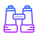
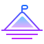

About The "EDIC".
What do EDIC do?
Our Vision..

To develop successful entrepreneurs who can contribute (to nation building) through creativity, problem solving and innovation for the growth and development of society at large.
Our Mission..

To create an entrepreneurial eco-system within CHARUSAT that acts as a catalyst in identifying, motivating and nurturing entrepreneurial talents; mentoring them towards sustainable pursuits through entrepreneurship awareness, education, training and research.
Our goal is to develop spirit of entrepreneurial culture in Students & Faculty members , by encouraging dynamic startups and by facilating science and technolodgy based innovations. EDIC support the startup from idea-level to creating actual product from idea.
To create an entrepreneurial eco-system within CHARUSAT that acts as a catalyst in identifying, motivating and nurturing entrepreneurial talents; mentoring them towards sustainable pursuits through entrepreneurship awareness, education, training and research.